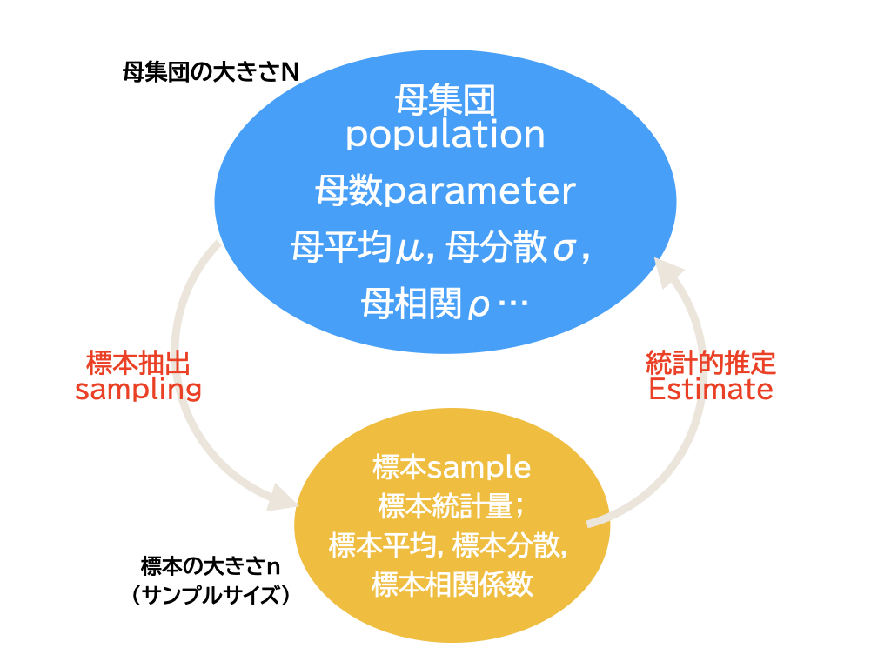
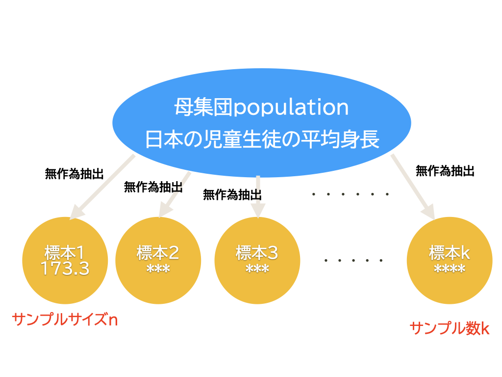
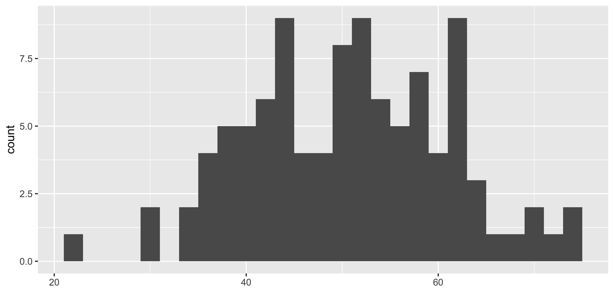
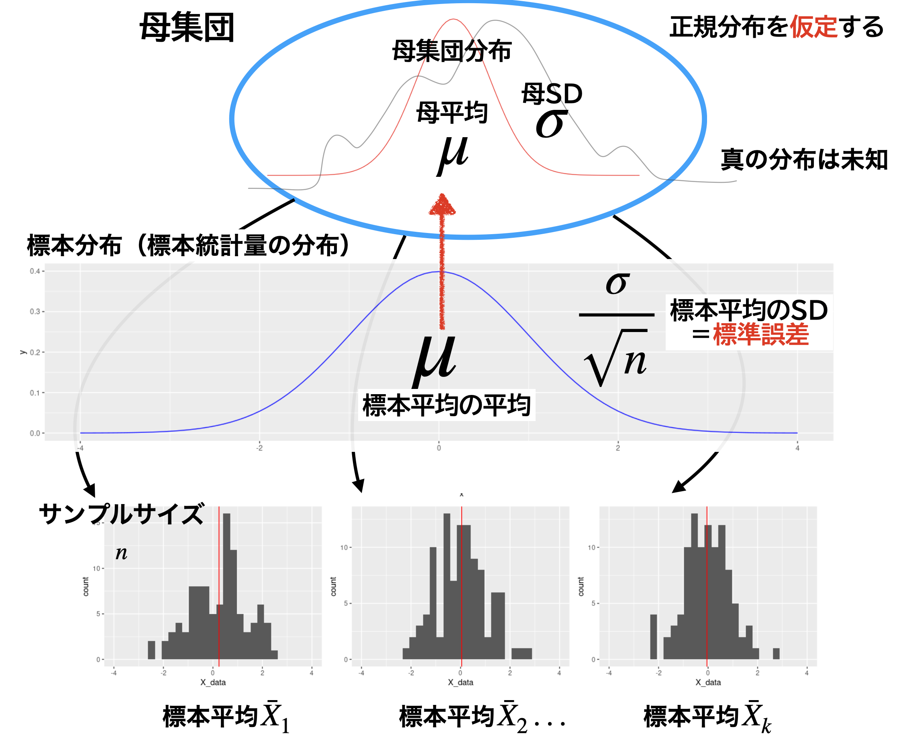
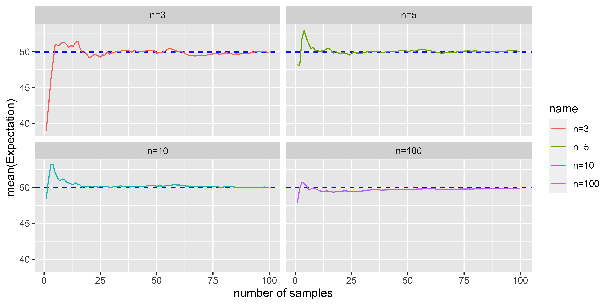

Chapter 8 確率と統計的推論
さて、授業は後半のほうに入って行きます。 確率と統計的推論というところからお話が始まります。
この授業は全体を通じてのテーマとして，「見えないものを見る」があります。 たとえば潜在変数ですとか誤差のようなものも見えないものの代表格ですが、ここから始まる話は一部のデータから全体を推測するという統計的な推測の考え方についてのお話です。
このようにそもそも統計学というものが、不完全な情報からできるだけ多くの知識を得ようとする営みであることを知っておいてください。そして，一見不可能に見えるようなこの営みを成立させるためには，確率の力を借り，いくつかの仮定をおいて議論を進める必要があります。 この「仮定」の上に成り立った”みなし”の学問であることは，ずっと忘れないでいてください。
8.1 母集団と標本
さてでは始めていきましょう。 例として，ある小さな学校で身体測定をしたと考えて下さい。 とても小さな学校で，生徒の数はたったの3人です。 3人の身長はそれぞれ，165cm,173cm,182cmでした。 さて，この3人の平均身長は？
そう， \[(165+173+182)/3=173.33\cdots\] ですね。大体173cmと結論づけましょう。
こうした代表値の計算(\(\to\)第\[chapter3\]講)は，統計学の中でもと呼ばれる領域に属します。そこでは，手元のデータの状態を記述することが目的なのでした。
ところで私たちがこうして何らかのデータを得たときに、手元のデータの状態だけではなくこれを使って何らかの推論をしたいということがあります。このままでは、ある地方の、ある学校の特徴がわかっただけだからです。しかもここは生徒数がたった3人ですから、特殊な例だと言われても仕方がありません。手元のデータを特殊な事例だといわれて困るのは，逆に言えば一般的な特徴を知りたかったからですよね。一般性を確保するという事は、他の学校ではどうか、他の地方ではどうか、日本全体ではどうか、世界ではどうか、と言及できる対象を広げたいと考えているということです。
もちろん日本全体や世界全体の児童生徒の身長を測って回るというのはとても大変なことですから一朝一夕にできることではありません。だからといって完全に諦めてしまうのではなく、手元のデータをヒントにして、この全体像を推測しよう。これがの基本的な狙いです。
推測統計学の話を始めるにあたって、いくつかの言葉を整理しておきましょう。図1.1を見てください。

母集団と標本
推測統計学では、私たちが知りたい世界全体のことをといいます。たとえばあなたが日本の小学生の平均身長が知りたい、というのであれば母集団は日本の小学生全体です。また母集団の統計的な特徴のことを，といいます。32
母数として、たとえば母集団の平均のことであれば母平均、分散のことであれば母分散、相関係数のことであれば母相関、などと，「母」をつけて区別します。
母集団は非常に大きな集団を仮定することが一般的ですので、全てを調査し尽くす事は非常に困難です。日本では5年に1度国勢調査が行われますが、これは日本という母集団全体のことを調べようとする調査です(悉皆調査といいます)。5年に1度しか調査ができませんし、その結果をまとめるのにも数年かかります。私たち心理学者が、何らかの心理学的な特徴を知りたいと考える場合、母集団は日本を飛び越えて、世界全体あるいは人類全体を指すことになります。この全体の特徴を測ろうとすると，おそらく一生かかっても研究は終わりません。 そこで全体の特徴を反映しているような、一部分を取り出してそれを詳しく調べることで、全体を考えるヒントにしようとします。この母集団から取り出されたもののことを、と呼びます。また，取り出し方はと呼び、一般にをすることが必要です。無作為という言葉は聞きなれないかもしれませんが、要するに、作為がない、つまり意図がないという意味です。何らかの意図を持ったサンプリングというのはたとえば、背の高い人だけを連れてきてその平均身長を測り、全体を調べるヒントにしようというようなものです。そして計算された平均は、おそらく一般よりも高いものになるでしょう。だって背の高い人を”意図的に選んで”連れてきたのですから。そうではなく，無作為に選び出すことが，全体の特徴を知るために重要なポイントになります。33サンプリングは、お料理でいうところの味見のようなものです。中身をよくかき混ぜれば，ごく一部だけ取り出すことでも、十分全体の味を推測できるわけです。
さて母集団におけるパラメーターと区別するために、標本における統計量の事は、標本平均、標本分散、標本相関係数、などと標本という言葉を前につけておきます。これらの数値のことをといいます。平均や分散，標準偏差，相関係数など、これまで標本に対して計算してきた記述統計量は、すべて標本における統計量なので，このように呼んで区別しておきます。 この標本の数値や統計をヒントにして、母数がどうなっているかに言及することを，と呼びます。
統計学では一般に，母数は未知であり，ギリシア文字で表します。母平均は\(\mu\)（ミューと読む）, 母分散は\(\sigma^2\)（シグマの二乗，と読む。総和を表すシグマ\(\sum\)の小文字です)，母相関は\(\rho\)(ローと読む)などがよく使われます。これに対して，標本統計量は計算できる数字であり，一般にアルファベットを用いて表現します。標本平均は\(\bar{X}\)，標本相関係数は\(r_{xy}\)などです。
ここで誤解しやすい2つの言葉について解説を追加します。1つは標本の大きさと数についてのお話です。図1.2を見てください。先程のとある学校での標本についての話ですが、そこでは3年の児童生徒を取り出したのでした。この時サンプルの大きさ、つまり標本に含まれる人数(観測度数)はと呼ばれます。このサイズの調査を他でも行ったとしましょう。つまりA校，B校，C校...といろいろな学校で3人ずつ調査を繰り返していくのです。この時，得られた標本の数はといいます。誤用がおおいのは，このサンプルサイズとサンプル数の取り違えです。「人数\(n\)のサンプルを取りました」というべきところを，「サンプル数\(n\)です」というと，「で，何人取ったの？ 」とか「そんなに繰り返し調査したの？ 」という返事がかえってきて，混乱することにもなりますので注意してください。

サンプルサイズとサンプル数
もう1つ。冒頭の例では，平均身長が173cmだったわけです。これはもちろん，違う標本を取れば(i.e.違う学校の3人を無作為に取ってくる)，違う数字になるでしょう。標本統計量はこのように，標本によって変わる変数なのです。メカニズムはわからないけどゆらぎがある，そう，確率的に変化するものと考えられます。確率的に変わる変数は，と呼ばれますが，標本統計量は確率変数なのです。このとき，173という数字は，確率変数がたまたま今回定まった値をとったことになりますね。そこでこの数字は，確率変数の，あるいは標本統計量の実現値と呼ぶことにします。標本統計量そのものは確率的に変動するものであり，それが具現化したものとは区別しておきましょう。34
8.2 母集団分布とモデル
さて用語の準備が整ったところで，実際にどのように推定していこうか，考えていきたいと思います。先程の標本では，平均身長(標本平均の実現値)が173だということがわかりました。であれば母平均も173だろう，と考えて良いでしょうか。少し性急すぎるような気がしませんか。違う標本を取れば違う数字になるでしょうから，1つの標本から答えを出すのは少し無理があるようです。
そこで標本統計量がどのように変わるのかを考える，仕掛けが必要になってきます。標本統計量は確率変数で毎回変わった数字が出てくるわけですから，これがどのような確率分布35に従うのかを考えることができれば，前進できそうですね。
そこで，母集団の数字()がどのような分布をしているかを考えましょう。これはもう，仮定の話です。だって実際に母集団の数字を全部見ることは叶わないわけですから。たとえば身長に影響してきそうな変数は無数に考えられます。たとえばご両親の身長，生育環境，日々の睡眠時間，食事の量，運動の量，etc...何もかもが，影響しているように思えます。さて，これら無数の条件がいろいろ積み重なって，1つの数字となったのであれば，そうした数字を集めると正規分布に従うのではないか，と考えることができそうです36。このように，仮定ではありますが，合理的な論拠があれば母集団の分布の形は正規分布である，と考えて話を進めても良さそうです。実際，心理学の多くの研究は，データの母集団分布に正規分布を仮定しています。心という目に見えないものも，無数の影響に晒されて出来上がるものと考えているからです。
重要なのは，母集団分布がどのような分布か，あるいは心的反応の結果として得られる数字の分布が，どのようなものであるかはすべて「モデル」であり37，「仮定」に過ぎない，ということです。反応の結果として得られる数字(アウトカム変数ともいいます)が，「はい」「いいえ」「どちらでもない」のような三択であれば，これの母集団分布は正規分布のような連続分布ではなく，離散的な分布を仮定しなければならないでしょう。
心理学は見えないものを見ようとする学問であり，統計は一部の不完全なデータから全体を見ようとする学問です。この一見不可能とも思えるような推論を進めるにあたって，仮定の力を借りて(モデルを置いて)いるのだということは，忘れてはいけません。
8.3 標本分布と標準誤差
母集団に分布を仮定すると標本統計量がどのような分布をするかが，数理的に導出できます。この計算はとても専門的ですので，興味がある方は「数理統計学」に関する他書をあたっていただくとして，そのエッセンスだけいただくことにしましょう。
そのエッセンスとはつまり，母集団に分布を仮定すると，標本統計量の分布がわかるということです。正確に言えば，標本統計量がどのような確率分布に従うのかがわかる，という点です。標本統計量がどのような確率分布に従うのかがわかれば，標本ごとにどの程度数字がブレるのか(分散・標準偏差)，標本分布の平均はどのあたりにあるのか(期待値)がわかります。であれば，1回の調査＝標本が1つであっても，この標本の数字がどの程度ブレていくのかがわかる，つまり実現値の精度を評価できるということになります。ありがたいことに，母集団分布が正規分布だとすると，標本平均の分布も正規分布になる，ということがわかっています。具体例で見ていきましょう。
| 69 | 63 | 58 | 54 | 55 | 44 | 63 | 55 | 50 | 53 |
| 58 | 38 | 43 | 59 | 52 | 58 | 34 | 52 | 55 | 61 |
| 37 | 47 | 41 | 41 | 61 | 53 | 43 | 39 | 53 | 74 |
| 62 | 45 | 39 | 44 | 65 | 39 | 47 | 63 | 44 | 64 |
| 50 | 55 | 52 | 66 | 47 | 74 | 49 | 70 | 57 | 63 |
| 50 | 56 | 40 | 44 | 43 | 52 | 38 | 31 | 58 | 51 |
| 22 | 72 | 60 | 52 | 61 | 45 | 48 | 57 | 59 | 54 |
| 62 | 52 | 45 | 56 | 49 | 50 | 46 | 63 | 40 | 43 |
| 57 | 65 | 41 | 37 | 35 | 30 | 50 | 63 | 42 | 51 |
| 51 | 70 | 62 | 36 | 45 | 59 | 45 | 37 | 43 | 48 |
\[tbl::16_01\]
ここに表1.1を用意しました。10行10列なので100の数字が入っています。100人のテストの成績だ，とでも思っておいてください。さてこの100人が母集団だとします(世界が100人の村だったら，みたいに)。母平均はこの100個の平均ですから，計算してみますと\(\mu=51.24\)でした。
さて，これは仮想データなので，母集団分布は正規分布であることがわかっているとします38。100点しかデータポイントがありませんから，ヒストグラムもあまり正規分布っぽくはなりませんが，一応図にすると次のようになります(図1.3)。

100人村のデータ
ここから，無作為にサンプルサイズ5のデータをとってみたところ，次のような数字が取れたとしましょう39。
\(X_1=\{ 57, 43, 47, 52, 63\}\)
これの平均は(標本平均は)\(\bar{X}_1=52.4\)です。母平均が\(\mu=51.24\)ですから，結構近いですね。
次に，もう一度同じ母集団から，同じサンプルサイズのデータを取りましょう。
\(X_2 = \{ 63, 61, 52, 31, 62\}\)
これの平均は\(\bar{X}_2=53.8\)でした。母平均からみると，少し大きいほうにずれてしまいました。
次にもう一度・・・・というのを繰り返していくと，表1.2のようになりました。
| サンプル番号 | 標本平均 |
|---|---|
| 1 | 52.40 |
| 2 | 53.80 |
| 3 | 49.40 |
| 4 | 55.00 |
| 5 | 50.20 |
| 6 | 44.40 |
| 7 | 55.00 |
| 8 | 50.80 |
| 9 | 54.00 |
| 10 | 52.80 |
\[tbl::16_02\]
これを見るとわかるように，標本平均は標本を取るごとに変わります。分布するのです。標本を取るごとに数値が変わりますので，母平均に近い数字を取ることもあれば，母平均から離れた数字になることもあります。ところが，この標本平均の平均を取ると，\(\bar{\bar{X}_i}=51.78\)になります。母平均は\(\mu=51.24\)ですから，個々のどの標本平均よりもぐっと母平均，つまり推定したい正解に近づいています。
今度は，同じ母集団からサンプルサイズ10でサンプリングするとしましょう。
\(X_1=\{50, 39, 65, 66, 44, 50, 36, 54, 70, 74\}\)
こちらの平均は\(\bar{X}_1=54.8\)です。これは母平均には程遠い数字ですが，頑張って次々サンプリングを繰り返したとします。10回分の結果が表1.3です。
| サンプル番号 | 標本平均 |
|---|---|
| 1 | 54.80 |
| 2 | 49.40 |
| 3 | 51.90 |
| 4 | 49.80 |
| 5 | 47.40 |
| 6 | 54.10 |
| 7 | 50.50 |
| 8 | 52.80 |
| 9 | 54.60 |
| 10 | 47.70 |
\[tbl::16_03\]
この時の標本平均の平均は，\(\bar{\bar{X}}=51.3\)で，先ほどのサンプルサイズ5の繰り返しよりも母平均\(\mu=51.24\)に近くなりました。ふむぅ。
さて，これらの実験から何がわかるでしょうか。まずは標本平均は分布するということです。取るたびに数字が変わるわけです。また，数理統計学の知見から，母集団が正規分布しているのであれば，標本平均も正規分布することがわかっているのでした。つまり表1.2にある標本平均(実現値51.60,49.00.50.60,.…など)は平均を中心として左右対称の単峰分布だということです。また，平均から離れるほど，その出現確率はどんどん小さくなるはずです。
標本分布が正規分布になるわけですが，標本分布の期待値＝平均値は，究極的には(サンプル数を無限に増やしていけば)，母平均に一致することがわかっています。標本平均の平均は母平均に一致することをとくに大数の法則といいますが，これが推測統計学の基本です。つまり，標本をたくさん取ることで母平均を推定できるようになるということです！
このことをふまえて，表1.2と表1.3にある2つのサンプルサイズ(\(n=5\)と\(n=10\))を比較すると，次のことがわかります。まず，サンプルサイズが大きい方が，母平均に近い数字が出やすそうだ，ということです。これはデータをたくさんとっているからで，推測したい母集団のヒントがたくさん手に入るからです。直感的にもわかりやすいでしょう。今回も，サンプルサイズ5の時よりも10の時の方が，標本平均の平均が母平均に近くなりました。
また，サンプルサイズを大きくすると，標本平均のばらつきは小さくなります。多くのデータをとっているのですから，極端な値に振り回される可能性が減るからです。
この標本平均のばらつきのことを表す言葉があります。標本平均は正規分布に従うのですから，この幅，つまり標準偏差がそのばらつきを表すことになります。標本平均の標準偏差はとくにと呼ばれ，推定値としての標本平均の精度を表す数字になります。今回，表1.2にあるサンプルサイズ5の場合の標準誤差は2.92，同じく表1.3にあるサンプルサイズ10では2.48です。サンプルサイズを大きくすると，標準誤差が小さくなる，つまり測定の精度が上がるわけですね。
具体的には，標本分布の分散は母分散\(\sigma^2\)をサンプルサイズ\(n\)で割ったものに一致することがわかっています。標本分布の標準偏差，つまり標準誤差は，\(\frac{\sigma}{\sqrt{n}}\)に一致することになります。分母にサンプルサイズが入っているので，これが大きくなると標準誤差が小さくなることがわかります(図1.4)。

標本，標本統計量，標本分布と統計的推測。母集団からサイズ\(n\)の標本を得る。個々のデータ(標本1の中にいる人物フィギュア)は，母集団と標本の枠組みの中で捉える。標本統計量は標本をたくさん取ると(\(1,2,\cdots k\),このときサンプル数\(k\)),毎回異なる値を出すが，標本分布に従っている。標本分布の期待値は母平均に一致するし，ある標本平均の精度は標準誤差で評価できる。
このことを数値シミュレーションでみてみましょう。先ほどと同じように，仮想的な数字を使って検討します。今度は一気に100万点のデータを作り，そこからランダムサンプリングをするようにしました。こうすることで，複数回無作為抽出しても，たまたま同じものがかぶる(再サンプリングされてしまう)ような危険性を回避できます。 さて，図1.5をみてください。まず，100万点のデータセットから無作為にサンプルサイズ3,5,10,50の標本を100回(サンプル数100)とりました。それらの標本平均も100あるわけですが，標本1の標本平均，標本1と2の平均，標本1,2,3の平均・・・と標本平均を1つずつ増やしていったときに，母集団の平均\(\mu\)(青の点線)に本当に近づいていくかどうかを検証したものです。

サンプリングを繰り返し，標本平均の平均を求めると，母平均に近づく
図1.5からわかるように，サンプルサイズが小さくても100回もとれば母平均に一致していくようです。ただ，この折れ線の最初の頃をみてみると，サンプルサイズが小さい（3や5)ときは，大きく変動しています。サンプルサイズが大きくなると（n=50)，最初から母平均近くの値が得られているわけです。データをたくさん取ることの利点は，標準誤差が小さくなることにあります。
ここまでのことをまとめておきます。ポイントは，次の2つです。
-
標本平均の標本分布の平均\(\bar{\bar{X}}=\mu\)
-
標本分布の標準偏差は\(S.E. = \frac{\sigma}{\sqrt{n}}\)
8.4 まとめ
今回は推測統計学の入り口でした。まずは用語として，母集団，標本，サンプルサイズ，サンプル数，母数，サンプリング，推定，標本分布といった言葉の整理を行いました。 ちょっとした言葉の違い，ちょっとした数字の違いでも意味や結果が変わってくるので，慎重に読みこなしてください。
次に，母集団に確率分布を仮定することで，一部の標本から母集団のことを推測できる，という基本的なロジックをご紹介しました。 推測統計学は，目に見えないものを想定して，仮定に仮定を重ねて推論していくことになります。仮定が多くて何回やだな，と思う人もいるかもしれませんが，そもそも全体像がわからないものを少数のヒントで推定するわけですから，無理な問題設定なのです。それをなんとか解決するためには，いくつかの仮定をおかざるを得ないのです。これらのお話は，あくまでも正規分布のような仮定・モデルの上での話であることは，いつまでも肝に銘じておいてください(それをいうと心理学そのものも，モデル上の話なんですけど！)。
ところで，最後に紹介した標本統計量をつかった母数の推定は，とよばれるもので，実は他にも推定する方法があります。ただ，いずれにせよ確率分布は活用することになりますので，確率的な表現にも慣れておく必要があるでしょう。
8.5 課題
8.5.0.0.1 前期と後期の学ぶ内容の違い
後期に入ってから推測統計学の領域に入ります。なぜ推測統計学を学ぶのか，前期で学んだ内容とどう変わってくるのかを，自分の言葉で説明してみてください(400-800字)
-
もう1つは「説明する」です。↩︎
-
なんで\(b\)なんだ\(a\)でもいいじゃないか，と言われたら返す言葉もないのですが，慣例的に\(b\)で係数を表しています。ちなみに今はアルファベットの\(b\)ですが，後期になると\(b\)のギリシア文字\(\beta\)に変わります。ギリシア文字で表現するのは推測統計学的な推定に関わるようになってからです。↩︎
-
親の身長から子供の身長を予測することを考えてみてください。次にその子が親になって，その子がまた親になって・・・という時に，「背の高い親からは背の高い子しかうまれない」というルールであれば，世界はものすごく高身長なひとと低身長な人に二分されてしまいます。そうではないということは，背の高い親から背の低い子が生まれることもあるし，その逆もあるということです。また野球選手などでルーキーのときは成績がいいのに，2年目になったら成績が下がる，というのは2年目のジンクスなどといわれますが，その人の平均的な能力以上のスコアが出た次の年に，平均的な値に帰るために低くなりがちなことは，当然ありえることでもあるのです。こうした効果のことを回帰効果といいます。↩︎
-
細かい計算式については，(kosugi2018のPp.133をみてください?)。↩︎
-
指数についてこれまで習ったことを思い出してください。\(a\neq 0\)のとき，\(a^0=1\)ですし，\(a^{-n}=\frac{1}{a^2}\)と定義するのでした。↩︎
-
こういうの見ると，「あ，ずるい。著者め逃げたな」と思いませんか。私なら思います。そう思われると悔しいので，参考図書として@西内201712をあげておきます。また@長沼201611のP.62–69も参考になります。↩︎
-
\(\pi\)は3.141592...という実数です。円周率ですね。面積になぜ円周率が出てくるのか，それがガウスの凄いところです。↩︎
-
とくに文系には！私も文系出身ですので，最初に習った頃は「うん，わからん！」となりました。↩︎